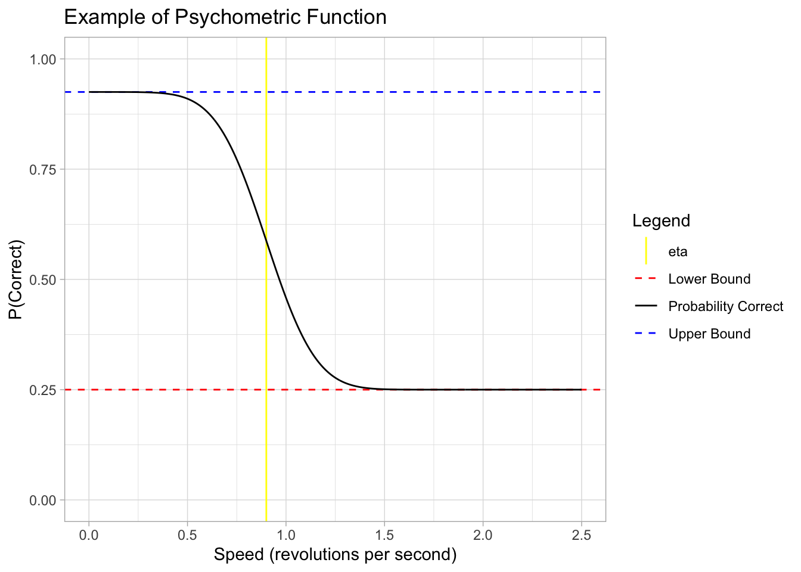
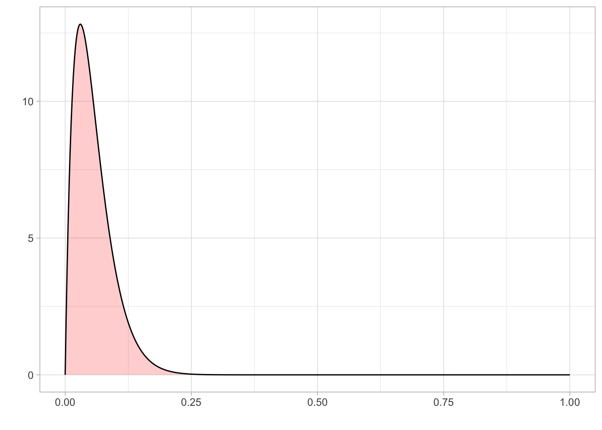
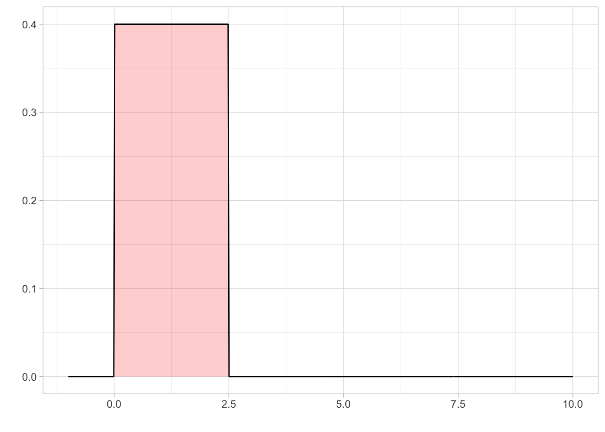
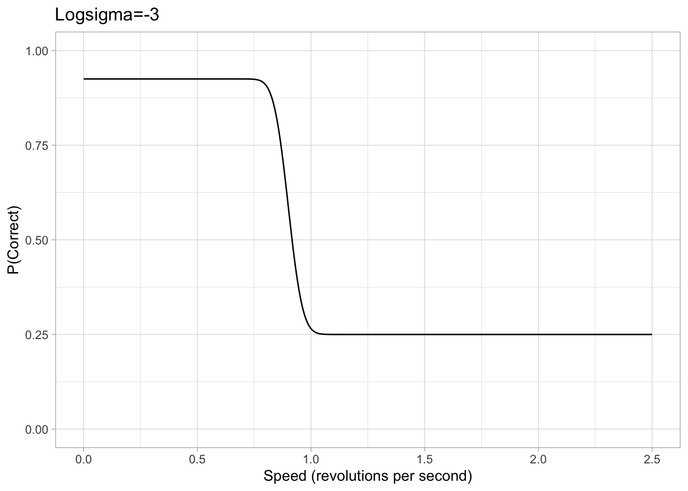
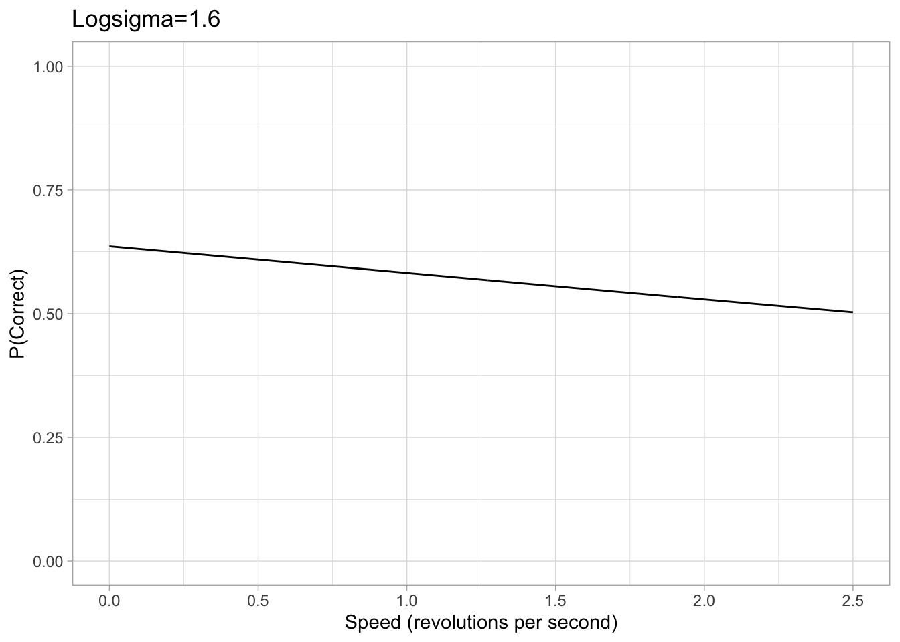
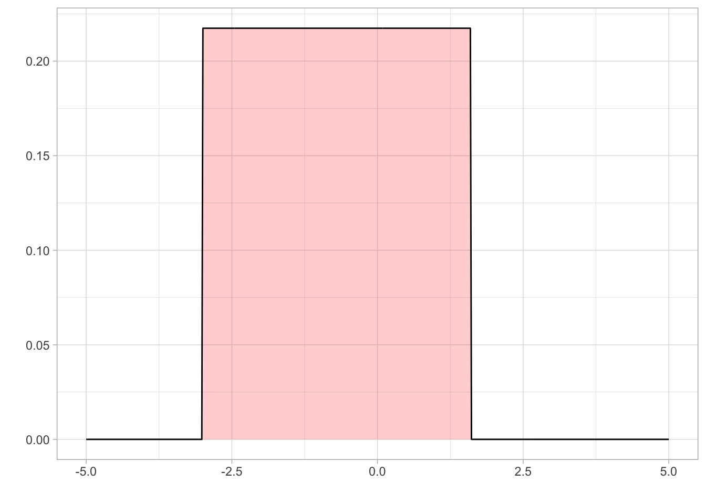

library(tidyverse)
library(brms)Bayesian analysis of psychophysical data using brms
As undergraduate science students, we were given the opportunity to apply for a six week summer research project under the supervision of Professor Alex Holcombe. Our project was to learn to analyse psychophysical data using R with the brms package.
After learning how Bayesian analysis works, we conducted a model recovery exercise using the brms package to determine if our model could accurately capture key patterns and estimate important parameters of fake data that simulated the experimental conditions.
To get started, we load the required packages.
The data
In 2024, the Holcombe lab did a replication and extension experiment based on Rodaia and Faubert’s 2017 study on the effect of aging on temporal resolution in attentional tracking.
We set out to compare the tracking ability of multiple objects between old and young people by analysing data from Holcombe’s replication experiment and Roudaia and Faubert’s (2017) experiment using Bayesian analysis.
The Experiment
Participants in both labs were given a stimulus that involved tracking two or three targets as they moved within rings. This stimulus had 3 concentric rings which each included 4, 5, 8 or 10 identical objects. Roudaia and Faubert (2017) tested participants with 5 and 10 objects while the Holcombe lab tested 4 and 8 objects to account for crowding zones. Each ring would rotate at a consistent speed for a set period of time and have a maximum of one target. Following the rotation, participants were asked to select the target on a prompted ring.
The animation below provides a small taste of the task, with 9 objects per ring. At the beginning of the movie, the two targets to track are white before becoming identical to the other objects. Although this did not occur in the experiment, the animation gradually increases in speed so that you can get a sense of the speed at which you can no longer track.
 Figure 1: Fixate on the central white dot and try to track the two targets which initially flash white. The speed increases, providing a quick assessment of the fastest speed at which you can track the initially-white targets.
Figure 1: Fixate on the central white dot and try to track the two targets which initially flash white. The speed increases, providing a quick assessment of the fastest speed at which you can track the initially-white targets.
The psychometric function
We generated fake data with the same structure as the real data, to practice analysing with brms.
For the psychometric function that generates the data, inspired by Schütt et al. (2016) as well as previously-collected data with this paradigm, we chose the function
\[ P(\text{Correct}) =C+(1-C-L(1-C)) \times\Phi\bigg(\frac{-(X-\eta)}{\sigma}\bigg) \]
wherein:
\(C\) is the chance rate of selecting the correct target (i.e. 1 / objects) and represents a lower boundary (floor or minimum percent correct)
\(L\) is the lapse rate parameter (i.e. the rate at which participants make a response not related to the answer, e.g. because of a lapse in attention), and affects the upper boundary (ceiling or maximum percent correct)
\(X\) is the speed in which objects move in a trial (in revolutions per second)
\(\eta\) is the location parameter, in particular is the \(X\) in which \(P(\text{Correct})\) is halfway between the upper boundary \((1-L(1-C))\) and lower boundary \(C\).
\(\sigma\) represents the scale parameter, representative of the shape/steepness of the function. (We later use \(\log(\sigma)\) for numerical stability in the brms model.)
Note:
We take the negative of \((X-\eta)\) in \(\Phi\bigg(\frac{-(X-\eta)}{\sigma}\bigg)\) in order to reflect the decreasing nature of the function (as speed increases, \(P(\text{Correct})\) decreases)
The support of the function is \((-\infty,\infty)\) but speed is always positive. Thus the model is not technically accurate but is still useful with the right parameters.
Example of the function
Below is an example plot of our psychometric function. For illustrative purposes only, the parameters are:
\(C=1/4\) , which is true when there are 4 objects in the rings
\(L = 0.1\) , participants make a random error in 10% of trials
\(\eta = 0.9\) At 0.9 rps, their performance falls halfway to chance
\(\sigma = 0.2\) ; reasonable steepness for these psychometric functions based on past papers
example <- dplyr::tibble(
speed = seq(0,2.5, length.out = 500),
C = 0.25,
L = 0.1, # for il
eta = 0.9,
sigma = 0.2,
phi = pnorm(-speed, -eta, sigma),
probability_correct = C + (1-C - L*(1-C))*phi,
upper_bound = 1 - L*(1-C)
)
ggplot(example) +
geom_hline(aes(yintercept = upper_bound, colour = "Upper Bound"), linetype = "dashed") +
geom_hline(aes(yintercept = 0.25 , colour = "Lower Bound"), linetype = "dashed") +
geom_vline(aes(xintercept = 0.9, colour = "eta")) +
geom_line(aes(x = speed, y = probability_correct,
colour = "Probability Correct")) +
theme_light() +
lims(x = c(0,2.5), y = c(0,1)) +
scale_colour_manual(values = c("Upper Bound" = "blue", "Lower Bound" = "red", "eta" = "yellow", "Probability Correct" = "black")) +
labs(colour = "Legend",
x = "Speed (revolutions per second)",
y = "P(Correct)",
title = "Example of Psychometric Function")
Creating Simulated Data
In order to build and test our model in brms, we must first create a simulated data set that is similar to our actual experiment data. This allows us to confirm the brms model is working and successfully recovers the parameters we set before applying it to our real experimental data that has unknown parameter values. In the actual data, there will be many group-wise differences in location and scale parameters. The following simulated data only has explicit differences between the \(\eta\) (location) of the two age groups (older vs younger).
set.seed(999) #ensures reproducible response for testing
#Set known values for parameters
lapse <- 0.03
sigma <- 0.2
location_parameter_younger <-0.91
location_parameter_older <-0.5
#Generate data frame for simulated data
simdata <- tidyr::expand_grid(
subj = seq(1, 50), #number of subjects
rep = seq(1,5), #replicants of each trial combination
num_target = c(2,3), #number of targets particpant tracks
speed = seq(.02,1.8, length.out = 12) # trials at 12 different speeds between .02 and 1.8
)
#note: Holcombe lab's experiment had both a set number of trials at certain speeds and a speed staircase. Rodaia and Faubert (2017) had a set number of trails at certain intervals based on benchmark speeds and then a Bayesian adaptive procedure for the rest of the trials. For simplicity, the simulated data will have an even number of trials at each speed.
#Introducing demographic data and seperating the two labs
simdata <- simdata %>%
group_by(subj) %>%
mutate(
gender = sample(c("M","F"), 1, replace = TRUE),
age_group = sample(c("younger", "older"), 1, replace = TRUE),
lab = sample(c("rf", "holcombe"), 1, replace = TRUE)
) %>%
ungroup()
# Splitting number of objects per ring based on lab
simdata <- simdata %>%
mutate(
obj_per_ring = case_when(
lab == "rf" ~ sample(c(5,10), n(), replace=TRUE), #Rodaia and Faubert (2017) tested only 5 and 10 objects per ring
lab == "holcombe" ~ sample(c(4,8), n(), replace = TRUE) #Holcombes lab tested only 4 and 8 objects per ring
)
)
#Add column for the probability of each trial being correct based on our psychometric function
#then add column to generate if the subject got the trial correct
simdata <- simdata %>%
mutate(
chance_rate = 1/obj_per_ring,
phi = ifelse(age_group == "younger",
pnorm(-speed, -location_parameter_younger, sigma),
pnorm(-speed, -location_parameter_older, sigma)),
probability_correct = chance_rate + (1-chance_rate - lapse*(1-chance_rate))*phi, #Phi is the inverse probit (normal CDF)
correct = rbinom(n=length(probability_correct), size = 1, prob = probability_correct)
)
#Convert these variables from vectors to factors
simdata <- simdata %>%
mutate(
gender = as_factor(gender),
age_group = as_factor(age_group),
lab = as_factor(lab),
gender = as_factor(gender)
) Selecting Priors
A prior distribution in Bayesian analysis will assign a probability to each possible value of a parameter. By specifying priors, brms takes into account not only the inputted data but also what is already known about the likelihood of certain parameter values to produce a more accurate estimation.
Prior on Lapse \((L)\)
Since lapse is a rate, it is bounded between 0 and 1. We know from previous literature that a reasonable value of lapse is between 0.03 and 0.04.
As the tested population was reasonably well-motivated, high lapse valuables were unlikely, although not impossible. Therefore, we set a prior on lapse using a beta distribution that was bounded between 0 and 1 and a mode of 0.03.
prior_lapse <- dplyr::tibble(
x = seq(0, 1, length.out = 500),
y = dbeta(x, 2, 33.33)
)
ggplot(prior_lapse) + aes(x = x, y = y) +
geom_area(fill = "red", alpha = 0.2) +
geom_line()+
theme_light() +
labs(
x = "",
y = ""
)
Prior on Location \((\eta)\)
We set a uniform prior for location with a lower bound of 0 and an upper bound of 2.5. The lower bound was set at 0 as you cannot have negative speed . Holcombe and Chen (2013) found that even the best participant would have a speed threshold of less than 2.5 revolutions per second, even with only 2 distractors present in their array. Holcombe and Chen (2020) found that tracking of a single object on a mechanical display which is not confounded by a display’s refresh rate still had a speed limit of 2.3 revolutions per second. Therefore, from previous research, an upper bound on speed threshold at 2.5 revolutions per second would be adequate to cover all participants.

Prior on Sigma/Scale \((\sigma)\)
Values of sigma can get extremely small and therefore tiny changes in the value of sigma can have significant effects, makeing it hard for brms to accurately estimate sigma. Therefore, our brms model is cast in terms of logsigma. We concluded that a sigma approximately between 0.05 and 5 would be a sufficient range to accommodate all participants based on looking at psychometric data from previous papers. Converting this with the log transform, we set a uniform prior on logsigma with a conservative lower and upper bound of -3 and 1.6 respectively.


Figure 2: Example plots of psychometric function with a logsigma of either -3 or 1.6. The chance rate, eta and lapse are all consistent with the previous example.

prior1 <- c(
set_prior("beta(2,33.33)", class = "b", nlpar = "lapse", lb = 0, ub = 1),
set_prior("uniform(0, 2.5)", class = "b", nlpar = "eta", lb = 0, ub = 2.5),
set_prior("uniform(-3, 1.6)", class = "b", nlpar = "logsigma", lb = -2, ub = 1.6)
)Setting up our Model in brms
Setting a model formula in brms allows the use of multilevel additive models, where there is a hierarchical structure in the data. But at this point we haven’t made the model multi-level as we have been concentrating on the basics of brms.
The bf() function of brms allows the specification of a formula. The parameter can be defined by population effects, where the parameter’s effect is fixed, or group level effects where the parameter varies with a variable such as age. The “family” argument is a description of the response distribution and link function that the model uses. For more detailed information on setting up a formula and the different arguments in BRMS seehttps://paulbuerkner.com/brms/reference/brmsformula.html
The model we used is based off our psychometric function used to generate the data mentioned previously. The only explicitly-coded difference in our simulated data is in the location parameter of older vs younger. Thus, in addition to the psychometric function, we allowed \(\eta\) and \(\log(\sigma)\) to vary by age group in the model. Because the psychometric function doesn’t map onto a canonical link function, we use the non-linear estimation capability of brms rather than linear regression with a link function.
Alex’s note: Using the nonlinear option is also what allowed us to set a prior on the thresholds \(\eta\), because we could then parametrize the function in terms of the x-intercept, whereas with a link-function approach, we are stuck with the conventional parameterization of a line, which has a term for the y-intercept but not the x-intercept
model_formula <- bf(
correct ~ chance_rate + (1-chance_rate - lapse*(1-chance_rate))*Phi(-(speed-eta)/exp(logsigma)),
eta ~ age_group,
lapse ~ 1, #constant/intercept only
logsigma ~ age_group,
family = bernoulli(link="identity"), #Otherwise the default link 'logit' would be applied
nl = TRUE #non-linear model
)Fitting Model to Simulated Data
Fitting the model gives an estimation of the average parameter value of the participants. The brm() function is used to fit the model based on the given formula, data and priors. Other arguments of brm can adjust the model fitting in various ways, for more information on each of the arguments see https://paulbuerkner.com/brms/reference/brm.html
fit <- brm(
model_formula,
data = simdata,
prior = prior1,
silent = 0, #prints more detailed messages (helps debug)
init = 0, #starting at
chains = 4, # the more chains, the greater convergence in the model
cores = 4, #how many parallel processes, speeds up model
iter = 2000, #default number of iterations
threads = threading(2) #how many cores work per chain
)Compiling Stan program...Start samplingsummary(fit)The fit converged with no errors!! :grinning: (this doesn’t always happen, when for example we use more complicated models)
In the above output, “Error Est” for the intercepts is the average of each participant’s estimated eta, lapse, logsigma. The eta_age _groupyounger represents the average eta advantage for the younger age group. The above output has estimated the difference to be 0.38 which is close to the 0.41 difference that was used to generate the data. The estimated difference in logsigma is small, not far off the 0 difference used to generate the data.
The fitted model’s estimated of the parameters are close to those used to generate the simulated data, meaning the model recovery was a success!!
Model Improvements
Although we have learned a lot and made significant progress over the course of 6 weeks, there is still work to be done and errors we are running into in our model recovery. In particular, when we alter the simulated data and model fit to include group-level effects for variables such as number of targets or objects per ring, the estimations are very inaccurate. We also have yet to test changes to group level values of sigma and are unsure whether the lapse rate may have a group effect for various conditions or population groups.
Another key area to look into is the brms syntax and fitting for nested variables to create a multilevel model. brms allows nesting of variables using parameter * (1 | nested group) *, but have not yet researched this or added it to our model.
References
Holcombe, Alex O, and Wei-ying Chen. 2013. “Splitting Attention Reduces Temporal Resolution from 7 Hz for Tracking One Object to <<3 Hz When Tracking Three.” Journal of Vision 13 (1): 1–19. https://doi.org/10.1167/13.1.12.
Holcombe, A O, and Chen, W-Y. (2020 unpublished manuscript). “The Speed Limit on Attentional Tracking.” Journal of Vision.
Roudaia, E, & Faubert, J. 2017. “Different effects of aging and gender on the temporal resolution in attentional tracking.” Journal of Vision, 17 (11): 1-1. https://doi.org/10.1167/17.11.1
Schütt, Heiko H., Stefan Harmeling, Jakob H. Macke, and Felix A. Wichmann. 2016. “Painfree and accurate Bayesian estimation of psychometric functions for (potentially) overdispersed data.” Vision research 122: 105-123.
Acknowledgements
We would like to extend a special thanks to our supervisor Professor Alex Holcombe for his guidance and support on the project. Additionally, we would like to extend thanks to Stella Katsoulis and Sarah Cronje who ran through the experiment with us, allowing us to have a fundamental understanding of what the data was actually representing. We acknowledge the use of Microsoft Copilot in assisting debugging our code and figuring out various RStudio functions and syntax.
— Vince Tafea and Rachel K. Wong